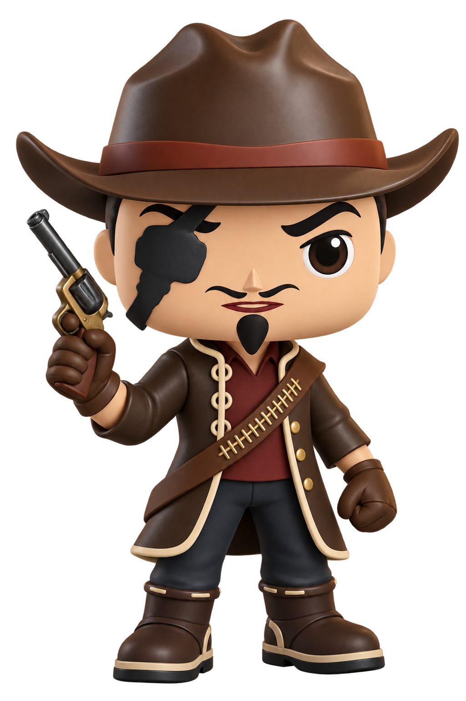

3D-Konzeptfigur
Luzz Biteyear Spielfigur
Luzz erscheint als kompakte Sammlerfigur mit seinem charakteristischen Cowboyhut, der Augenklappe über dem rechten Auge, dem langen Mantel und dem Patronengurt. Der gezogene Revolver greift seine Rolle als Lichtschütze aus dem Spiel auf.
- Figur
- Luzz Biteyear
- Ausführung
- Stilisierter 3D-Sammlerentwurf
- Status
- Konzeptprodukt